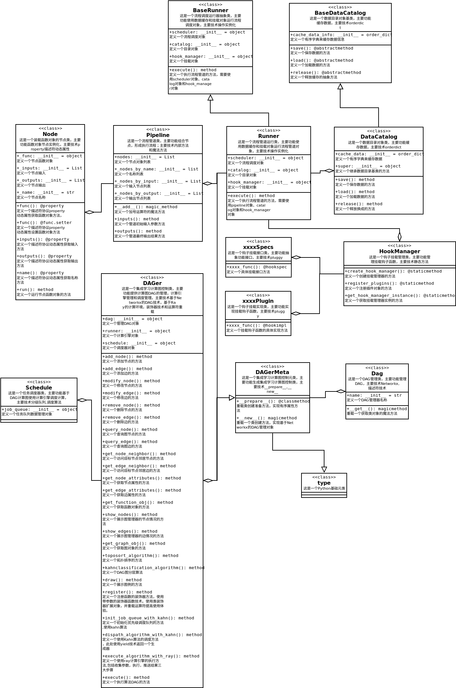

Design¶
Extensive use of metaprogramming technology to improve code flexibility, readability, and maintenance quality
Modular design, including the five major concepts of Node, Scheduler, DataCatalog, Hook, and Runner
Node: Callable nodes for fine-grained control
Scheduler: Optimization of Various Algorithms Based on Graph Theory
DataCatalog: Cache optimization to reduce operational pressure
Hook: Dynamic plugin method, flexible and scalable
Runner： Based on the Ray computing engine, it naturally supports heterogeneous, distributed, and flexible scalability
Automatic optimization design, storage optimization, and calculation optimization based on backend graph theory algorithms and storage components for automatic optimization
Technical List¶
Mixin mode
git
conda
subprocess
click
mongo
leveldb
toml
minio
pickle
uuid
__new__
type
networkx
decorator
Operator overloading
iterator
ray
__call__
__prepare__
Descriptor technology
__init__
nametuple
__slots__
FSM
__getattr__
__setattr__
orderdict
__all__
Multiple Inheritance
__rshift__
inspect
fastapi
uvicorn
shutil/os
airflow
Design UML diagram¶
The following is the designed UML diagram：
